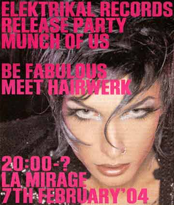

| Februar 2004 |

Boltens Gård, Lørdag den 7. feb. kl. 20
Det nystartede pladeselskab Elektrikal Records holder sin første monsterreception på grund af skiven "Munch Of Us" på La Mirage i Boltens Gård Lørdag den 7. Februar. Egentlig er det et lukket arrangement, men da det er folk fra den gamle og nyere københavnske undergrund, burte man bare kunne knalde sig selv op i noget opkørt, noget langstrakt, noget rundt eller noget cherise og så blive lukket ind. Forsøg.
Skribent: Martin Kjær.
Print denne side